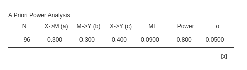
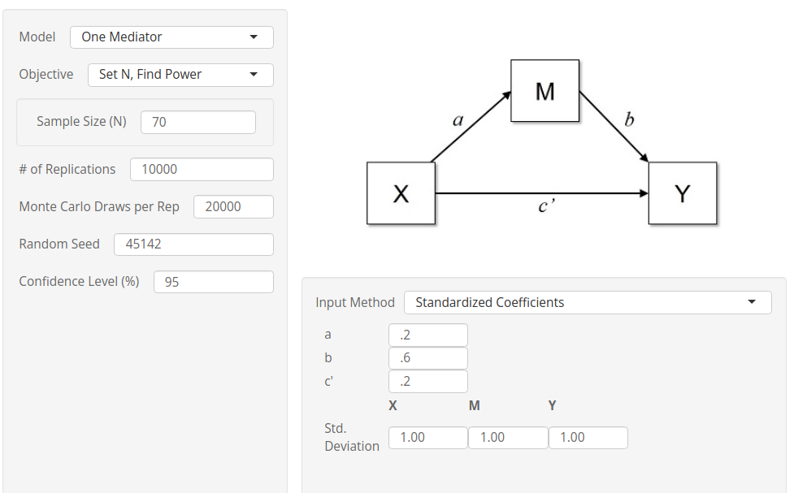
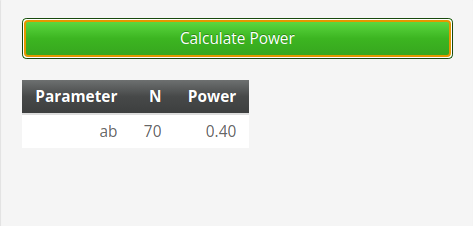

Mediation: Simple models
0.4.0
Here we compare the results of PAMLj with other software that performs power analysis for mediation. In particular, we will compare our results with pwrss R package, Monte Carlo Power Analysis shiny app, and powerMediation R package
pwrss R package provides desired power and required sample size based on Sobel test and joint significance methods. It also provides desired power based on simulations. The simulations are based on Monte Carlo parametric re-sampling.
Monte Carlo Power Analysis shiny app] provides desired power based on simulations. The simulations are based on Monte Carlo semi-parametric re-sampling.
powerMediation R package provides power and sample size based on Sobel test.
Finally we also check some results with bmen R package, which employs a two-stage simulation approach. This package simulate samples, and for each sample simulate a bootstrap test. This makes the computation very time-consuming, despite it yields the same results of the much faster parametric re-sampling.
As with any power analysis software comparison, results should be considered equivalent when their values are very close, even if they do not match exactly. This is because power parameters, such as effect sizes and sample sizes, are often rounded or approximated. The exact values may not correspond precisely across different software, but the key consideration is that the results are practically the same and provide similar insights for decision-making. Small differences in output do not invalidate the analysis as long as they are within an acceptable range.
Setup
- Aim = Sample Size
- Expected \(a\) = .3
- Expected \(b\) = .3
- Expected \(c'\) = .4
- power = .80
- Alpha = .05
Sobel test
PAMLj
In PAMLj we set the parameters as
follows, using the Sobel test:
Using the Sobel test method one obtains \(N=144\):
powerMediation package
In powerMediation the command to use is
ssMediation.Sobel. The required input are:
- theta.1a = a = .3
- lambda.a = b = .3
- sigma.x = 1 (standard deviation of x)
- sigma.m = 1 (standard deviation of the mediator)
- sigma.epsilon: this is the standard deviation error term of the regression predicting the dependent variable. It is equivalent to
\[ \sigma_{\epsilon}=\sqrt{1-R_{y}^2} \] where \(R_{y}^2\) is the R-squared in predicting the dependent variable with both the independent variable and the mediator. We can compute it with:
\[ R_{y}^2=b^2+c'^2+2abc' \] which implies
\[ \sigma_{\epsilon}=\sqrt{1-(b^2+c'^2+2abc')} \]
a <- .3
b <- .3
cp <- .4
e<-sqrt(1-(b^2+cp^2+2*a*b*cp))
powerMediation::ssMediation.Sobel(power = .80,
theta.1a = a,
lambda.a = b,
sigma.x = 1,
sigma.m = 1,
sigma.epsilon = e)## [1] 144.3366It is clear that the results concur with those produced by PAMLj.
pwrss package
In pwrss the command to use is
pwrss.z.mediation. The required input are:
- a = .3
- b = .3
- ry.mx: this is expected R-squared \(R_y^2\) in predicting the dependent
variable. Although
pwrss.z.mediationaccept \(cp\) (c prime) as input, it is more accurate to pass the \(R_y^2\), which incorporate the presence of \(c'\). In fact, as we have seen above:
\[ R_{y}^2=b^2+c'^2+2abc' \]
a<-.3
b<-.3
cp<-.4
r2y<-b^2+cp^2+2*a*b*cp
pwrss::pwrss.z.mediation(a=a,b=b,r2y.mx=r2y,power=.80,alpha=.05)## Indirect Effect in a Mediation Model
## ====================================
## method non-centrality n power
## Sobel 2.808013 145 0.8017955
## Aroian 2.803974 149 0.8006690
## Goodman 2.805152 140 0.8009979
## ------------------------------------
## Type 1 error rate: 0.05The Sobel test yields a required sample size of \(N=145\), as the other software.
Joint significance
PAMLj
In PAMLj we set the parameters as
follows, using the Sobel test:
The relevant parameter here is \(N=95\)
Other software
At present, I have not found any software that estimates the required
sample size (N) using the joint significance method. However, we can
work around this by using the pwrss.z.mediation function,
which calculates power for a given N. From there, we can iteratively
search for the N that provides the closest match to the required power,
effectively using a brute-force approach.
Here is an algorithm for that.
a<-.3
b<-.3
cp<-.4
r2y<-b^2+cp^2+2*a*b*cp
power<-.80
ns<-seq(80,110,by=1)
results<-lapply(ns, function(n) c(n,pwrss::pwrss.z.mediation(a=a,b=b,r2y.mx=r2y,n=n,alpha=.05,verbose=F)$power[["joint"]]))
data<-as.data.frame(do.call(rbind,results))
data$dif<-abs(data$V2-power)
data$V1[which.min(data$dif)]## [1] 95Comfortably, the brute force method yields the same results as PAMLj.
Monte Carlo
PAMLj
In PAMLj we set the parameters as
follows, using the Monte Carlo test:
Because we are testing the module, we set a seed for the Monte Carlo simulation. We do this only to ensure the reproducibility of the example; however, in everyday analysis, this option should almost never be used.
Using the Monte Carlo method one obtains (a part for random variability) \(N=96\):

pwrss
As we did for the joint significance test, we can use
the pwrss.z.mediation function, which computes power for a
given N using the Monte Carlo method to search for the N
that yields the closest match to the required power.
Here is an algorithm for that (it can be slow).
a<-.3
b<-.3
cp<-.4
r2y<-b^2+cp^2+2*a*b*cp
power<-.80
ns<-seq(80,110,by=1)
results<-lapply(ns, function(n) c(n,
pwrss::pwrss.z.mediation(a=a,b=b,r2y.mx=r2y,n=n,alpha=.05,mc=TRUE,nsims=10000,verbose=F)$power[["mc"]]))
data<-as.data.frame(do.call(rbind,results))
data$dif<-abs(data$V2-power)
data$V1[which.min(data$dif)]
# This section is not evaluated during the page compilation due to the time required for execution. The output is pre-computed, but it can be
# verified that the results consistently appear in this manner. With nsims=10000, we expect minimal variability in the results. However, it appears # that pwrss does not honor the set.seed function for reproducibility.
# Results are almost always 96-98Monte Carlo Power Analysis (mc_power_med)
Monte Carlo Power Analysis is a Shiny app that computes power for mediated effects using semi-parametric re-sampling. In each Monte Carlo sample, a new dataset is randomly drawn from a population with the specified input parameters, and the mediated effect is calculated along with the standard error. For each sample, a distribution of possible parameters is generated and its confidence intervals are evaluated. While Monte Carlo Power Analysis does not directly solve for the required N, it allows you to evaluate power across a range of N values. In this case, we requested an evaluation of power with N ranging from 80 to 120, using the parameters mentioned above.
Results, shown here in the vicinity of \(power=.80\) (4th column) shows that the required N (2nd column) is around 96, congruent with the results of PAMLj.
Power estimation
Now we check the results of PAMLj
when the sample size is given and the required parameter is
power.
Setup
- Aim = Sample Size
- Expected \(a\) = .2
- Expected \(b\) = .6
- Expected \(c'\) = .2
- N = 70
- Alpha = .05
For joint significance method we obtain \(power=.401\).
for Sobel test method we obtain \(power=.381\).
and for the Monte Carlo method we get \(power=.402\).
Other software
The pwrss package provides all three methods to estimate
expected power.
a<-.2
b<-.6
cp<-.2
r2y<-b^2+cp^2+2*a*b*cp
N<- 70
pwrss::pwrss.z.mediation(a=a,b=b,r2y.mx=r2y,n=N,alpha=.05,mc=TRUE,nsims=10000,verbose=T)## Indirect Effect in a Mediation Model
## ====================================
## method non-centrality n power
## Sobel 1.653684 70 0.3798468
## Aroian 1.636274 70 0.3732478
## Goodman 1.671662 70 0.3866988
## Joint NA 70 0.4005886
## Monte Carlo NA 70 0.3990000
## ------------------------------------
## Type 1 error rate: 0.05Results are very close the the ones obtained with PAMLj.
As a further check for the Monte Carlo method, we can
employ Monte
Carlo Power Analysis. Unfortunately, Monte Carlo Power
Analysis shiny app does not allow to run a simulation without a
seed, so results a bound to the particular
seed one uses. To overcome the issue, we set the number of
simulations to 10000 (patience is required here), so the
seed becomes less important.
 
The results are nicely in line with the ones obtained with PAMLj.
As a final remark, these comparisons demonstrate that one does not need to simulate a full re-sampling of a bootstrap tests, which is very time consuming, when parametric Monte Carlo, which is quicker, or joint significance, which is very fast, yield the same results.
Comments?
Got comments, issues or spotted a bug? Please open an issue on PAMLj at github or send me an email